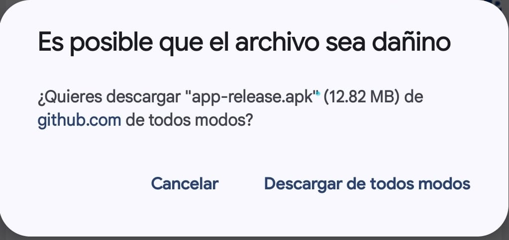
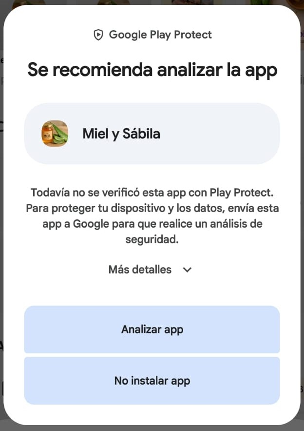
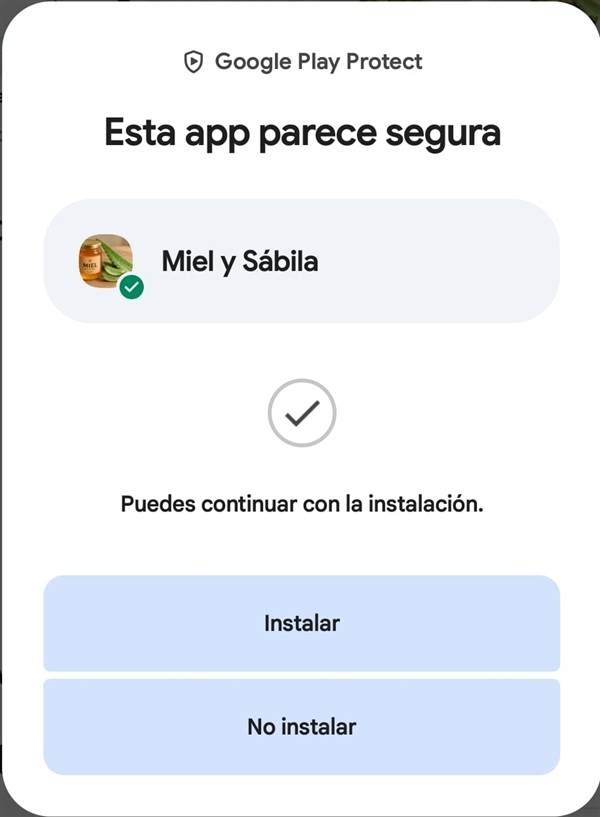
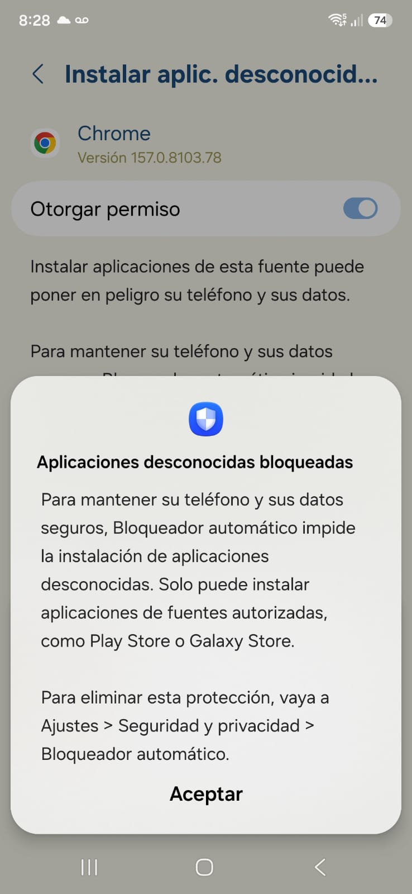

Catálogo Miel y Sábila
Jabones, aceites y cremas artesanales · León, Guanajuato
Buscando la versión más reciente…
Cómo instalarla
Son cuatro pasos y toma un par de minutos. Solo se hace la primera vez.
-
Descarga el archivo
Toca «Descargar la aplicación». Chrome mostrará el aviso «Es posible que el archivo sea dañino». Es normal: sale con cualquier aplicación que no viene de Play Store. Toca Descargar de todos modos.

-
Ábrelo
Cuando termine, toca Abrir en el aviso de descarga, o busca el archivo
.apken tu carpeta de Descargas. -
Permite la instalación (solo la primera vez)
Android te preguntará si permites instalar aplicaciones desde Chrome. Toca Configuración, activa Permitir de esta fuente y regresa con la flecha ←.

-
Instala
Toca Instalar. Es probable que Google Play Protect muestre «Se recomienda analizar la app» porque todavía no la ha verificado. Toca Analizar app.

En unos segundos dirá «Esta app parece segura». Toca Instalar y, al terminar, Abrir. No toques «No instalar».

En algunos teléfonos el aviso dice «aplicación no verificada»: toca Más detalles y luego Instalar de todos modos.
¿No te deja instalar?
Mi Samsung dice que está bloqueado (Auto Blocker)
Algunos Samsung nuevos traen Auto Blocker, que impide instalar aplicaciones que no vienen de una tienda. Puedes desactivarlo mientras instalas y volver a activarlo después:
- Abre Ajustes → Seguridad y privacidad → Auto Blocker.
- Apaga Auto Blocker (o la opción que bloquea instalaciones de orígenes desconocidos).
- Vuelve a abrir el archivo descargado e instala.

El nombre exacto puede variar un poco según el modelo.
No me salió el permiso para instalar
Ve a Ajustes → Aplicaciones → Chrome → Instalar apps desconocidas y activa Permitir de esta fuente. Después vuelve a abrir el archivo descargado.
Play Protect me pide analizar la app o dice que no está verificada
Play Protect avisa de toda aplicación que no está en Play Store, aunque sea segura. Si dice «Se recomienda analizar la app», toca Analizar app; cuando diga «Esta app parece segura», toca Instalar. Si dice «aplicación no verificada», toca Más detalles → Instalar de todos modos.
No encuentro el archivo que descargué
Abre la app Archivos (o «Mis archivos») → Descargas y busca el archivo que termina en .apk. Tócalo para instalar.
La aplicación abre sin fotos
La primera vez necesita conexión a internet para descargar las fotos. Ábrela con Wi-Fi o datos y espera unos segundos; después quedan guardadas en tu teléfono.
¿Cómo la actualizo?
La propia aplicación te avisa cuando hay una versión nueva. Tócala, descarga e instala encima, sin desinstalar la anterior: no pierdes nada. También puedes volver a esta página y descargar la última versión.
¿Es segura?
- La aplicación es del negocio Carolina Miel y Sábila; esta página y el archivo están en su sitio oficial.
- Solo pide un permiso: acceso a internet (para ver el catálogo y enviar pedidos). No pide cámara, ubicación, contactos ni archivos.
- Está firmada: Android solo acepta actualizaciones que vengan del mismo autor.
- Descárgala solo desde esta página. No uses archivos que te manden por otros medios.